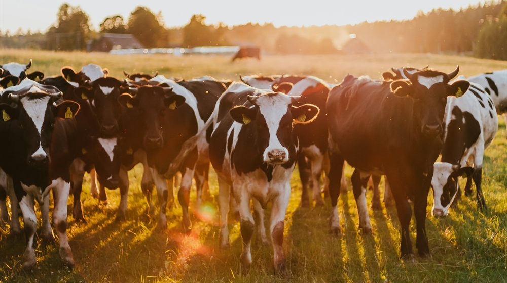
Stage 01
Farm
Where the milk and the cost base both begin.
Grew up on one. Ran daily milk production and herd management on an Arla owner's farm, and still stand in when illness stops a family.
Arla Futures Finance Graduate Programme 2027
Taking the lead in dairy finance
Dairy finance is where I want to take the lead and create a sustainable impact. At Arla I turned investment cases and cost analyses into decisions senior leaders could act on. The culture and strategic direction I experienced during that time fully convinced me. This led me to join the post-merger integration and to write my thesis on net working capital optimisation for dairy stocks. Growing up on a dairy farm, I know what it means when the result ends up as the farmer owner's milk price. That is why I am eager to grow with Arla over the long term and contribute to Feed Life.
 Based in Denmark
Based in Denmark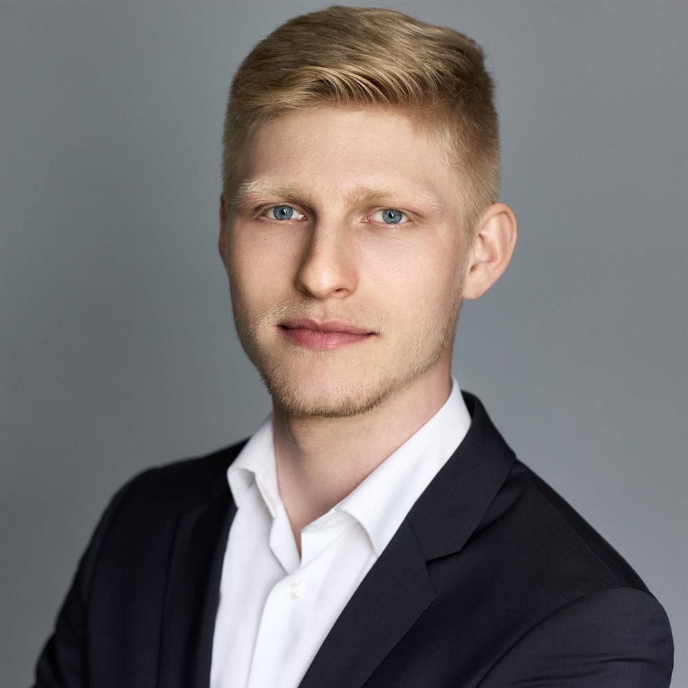
Motivation
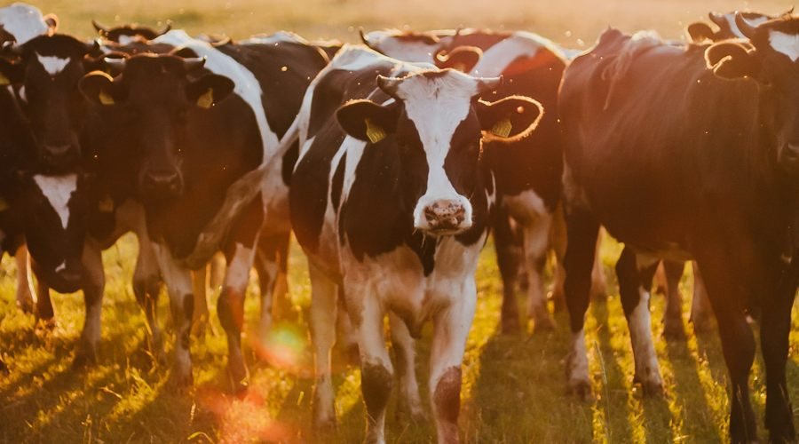
People will always eat, in one form or another. I want to spend my working life somewhere that stays necessary, and where what I calculate has a physical counterpart I can stand next to.
A cooperative that takes its democratic structure seriously and uses it to connect people, that aims to lead rather than follow, and that lives sustainability rather than reporting it. A conversation with the chair of the board showed me what it means to belong to Arla as a farmer. Friday breakfast with the team showed me how much people there want to be there.
2025 showed how quickly the ground can move: firm prices in the first half, a sharp correction in the second. Steering a cooperative through that needs figures that are ready before the decision, not after it. That is the work I want to do, so the farmer owners get a result they can plan and invest with.
The through line
Milk leaves the farm, gains value at every stage, and the result comes back to the same farms as a milk price. I have stood on the solid part of the wheel. The dotted part is the return leg: the post-merger integration, net working capital optimisation of dairy stocks, and the Finance Graduate Programme as the place to carry it through.
My dairy chain, stage by stage

Stage 01
Where the milk and the cost base both begin.
Grew up on one. Ran daily milk production and herd management on an Arla owner's farm, and still stand in when illness stops a family.
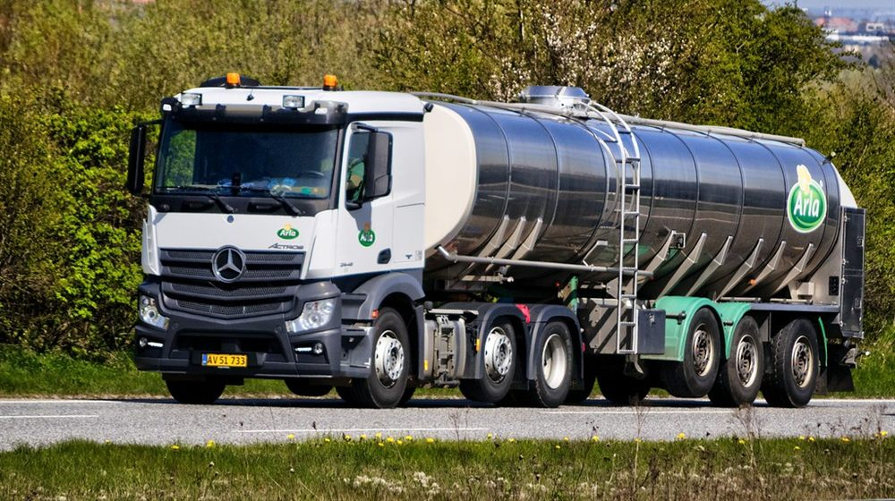
Stage 02
Every litre is weighed, graded and paid for. The first number the farmer sees.
Saw at first hand how cooperative decisions reach the farms that own the business.
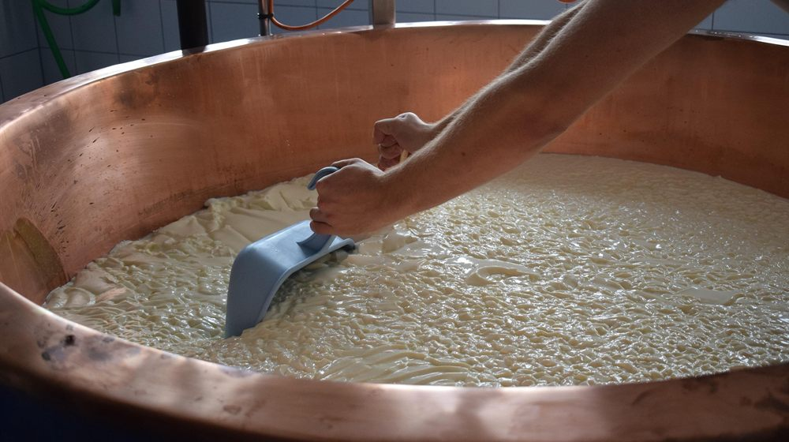
Stage 03
Raw milk becomes cheese, powder, whey. Where yield and recipe decide the margin.
Produced artisan alpine cheese from raw milk in Switzerland, from curd handling to ripening.
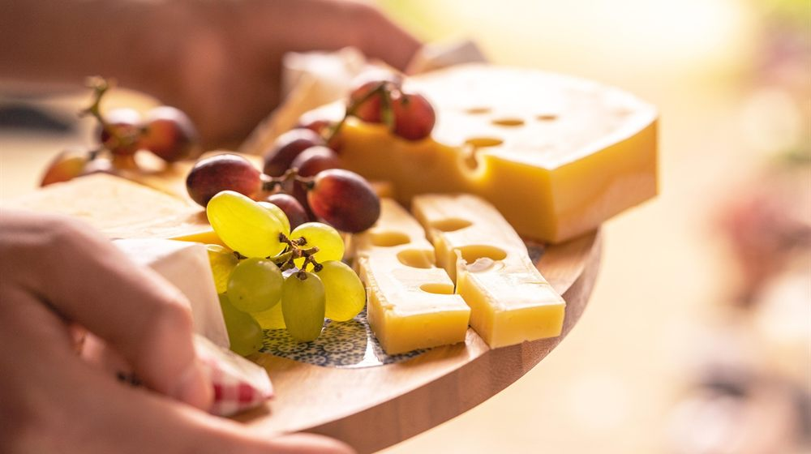
Stage 04
Brands and whey ingredients, where the cooperative earns its premium.
I own the costing and profitability platform market-leading dairy companies use to see what a product really costs.
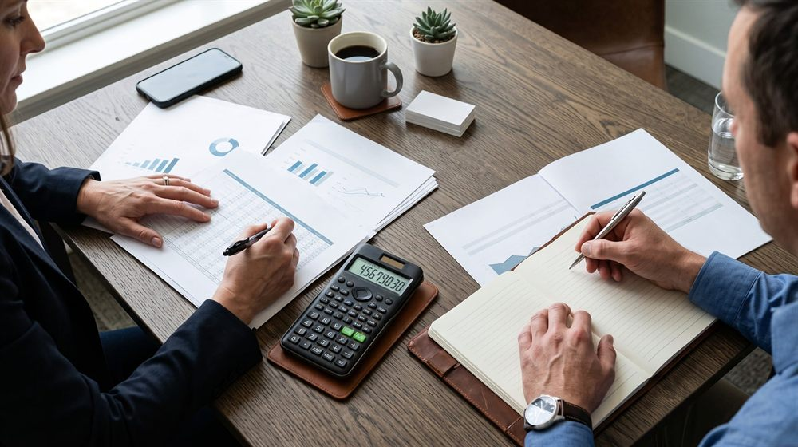
Stage 05
Volatile commodity markets, investment decisions, working capital.
Where I work now: investment business cases, a cost and benefit governance framework, and a variance analysis that corrected a six-figure deviation.
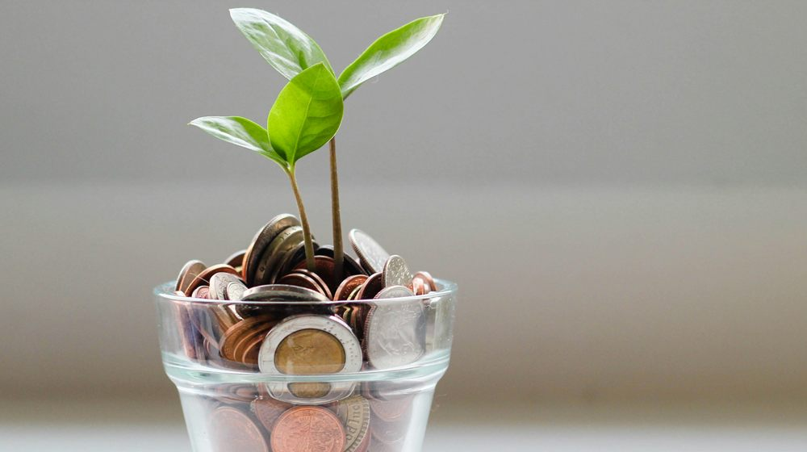
The return leg · next
Post-merger integration, data into decisions, net working capital, and the carbon figures that move into controlling as CSRD applies from 2027.
So the farmer owners get a result they can plan and invest with.
Chronology
 HBLA Ursprung, Salzburg · grade 1.5
HBLA Ursprung, Salzburg · grade 1.5
 Moor-Dürrenwald, St. Stephan
Moor-Dürrenwald, St. Stephan
Agrovis ApS, an Arla member farm
Austrian Armed Forces
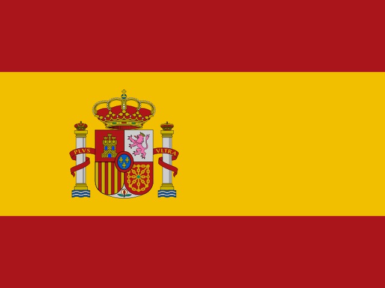
 Spain and Portugal
Spain and Portugal Weihenstephan-Triesdorf · grade 1.5
Weihenstephan-Triesdorf · grade 1.5
 University College Dublin
University College Dublin
Dairy and food consultancy, Eching
Arla Foods, Aarhus
Dairy and food consultancy, Eching
TUMDTU, joint degree · average 1.3
Dairy and food consultancy, Eching
Arla Foods, Aarhus
Denmark preferred, Germany works equally well
Education
Experience
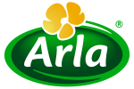
Student Assistant · since November 2026
Intern · June to September 2025
Product Owner & Consulting · since June 2024
Student Assistant and Tutor · April to August 2026
Agrovis ApS, an Arla member farm
· Moor-Dürrenwald
Internships · 2018 and 2019
Evidence
Toolkit
What I do when the screen is off, and the tools I reach for when it is on.
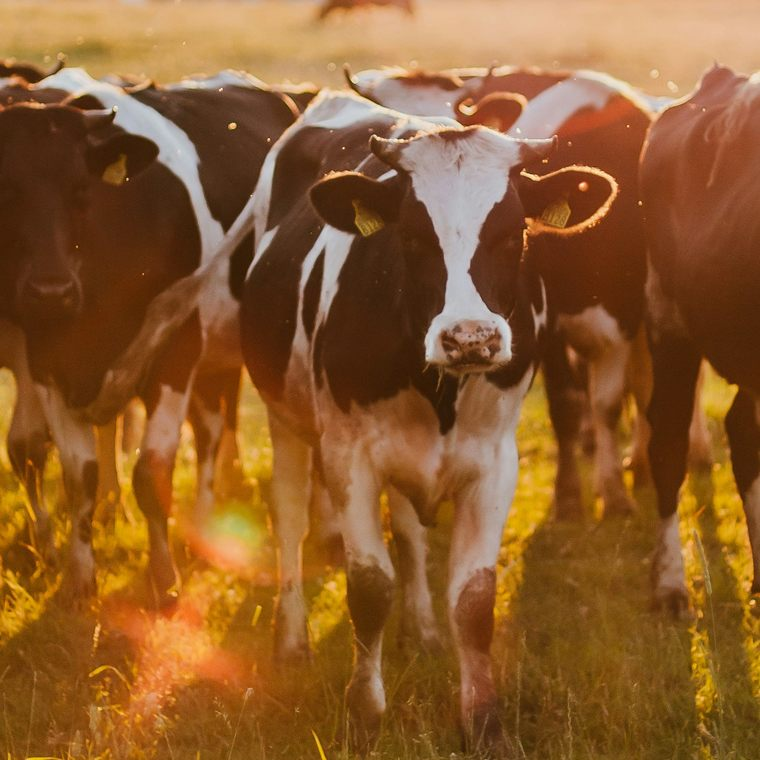
Responsibility
When illness or an accident stops a family, the cows still have to be milked that evening. I have taken a farm over at short notice more than five times, and I still do. It is the part of this industry that made me want to work for the people who own it.
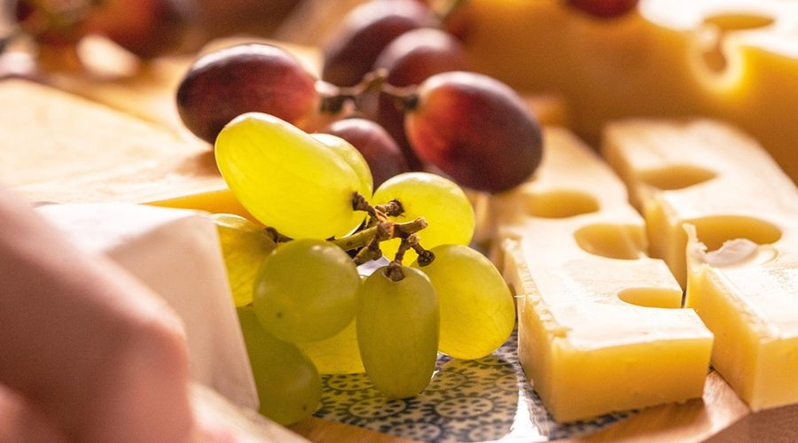
Beyond work
Bouldering, cycling and mountaineering. Cooking, and a declared cheese lover — which is not unrelated to the industry I chose. And building small applications for problems I run into day to day, which is where my interest in the data side of finance started.
Tools
Excel and VBA · Power BI and Power Query · SQL · Python
SAP BTP, Fiori and Analysis for Office · SAP Crystal Reports
C# and .NET · React · AI-assisted development
German native · English fluent · Spanish basic · Danish, currently learning
Where
Select a country to see what I did there.